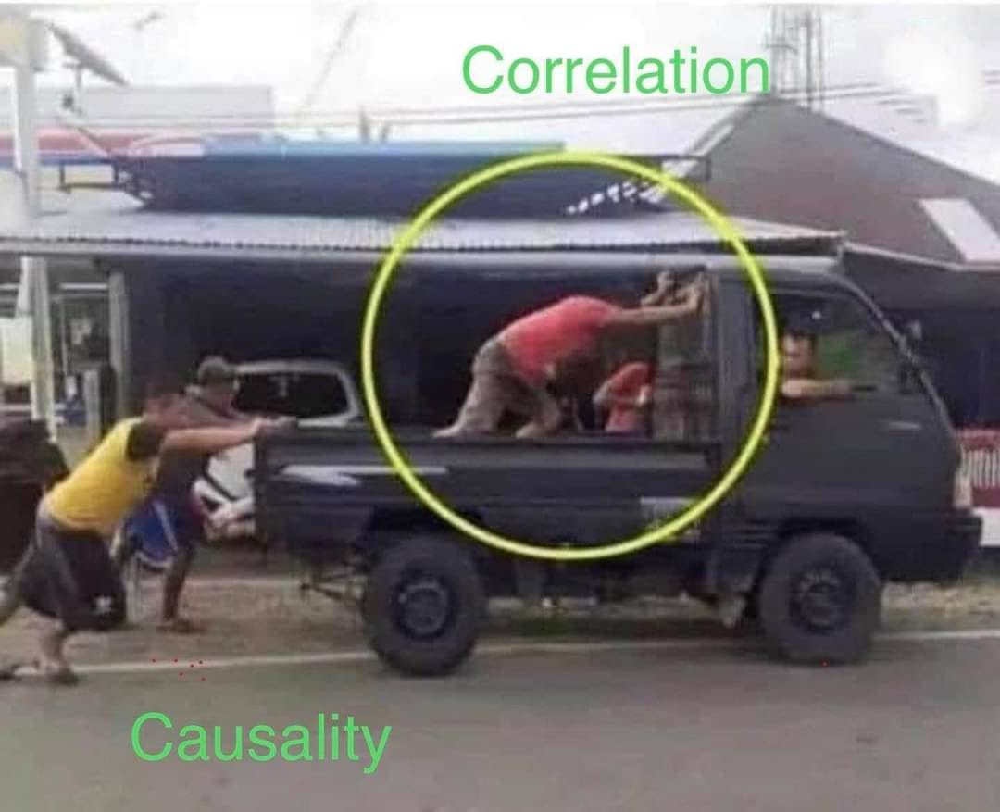

1 El Problema fundamental de la Evaluación de Impacto
1.1 La ruta de la causalidad

El objetivo central es comprender la relación causal entre:
\[X\rightarrow Y \]
\[y_i=\beta_0+\alpha T_i+\beta^* X^*_i+\epsilon_i\]
- Variables de resultado
- Variables de control
- Variables de disturbio
- Ruido blanco
Fuentes de invalidación
- Historia
- Maduración
- Administración de \(T\)
- Instrumentación
- Selección
- Mortalidad
1.2 Tres malos ejemplos de métodos evaluación



- Estudio de caso con una sola medición
- Diseño pretest-postest de un solo grupo
- Comparación con grupo estático
1.3 El problema fundamental
Iniciemos definiendo la variable de resultado \(Y\) en la población de interés, sobre la cual se plantea ver los cambios dado un tratamiento/intervención, denotemos como \(T_i\) la variable que toma los valores de \(0\) y \(1\), donde \(T_i=1\) la unidad \(i-esima\) fue tratada, \(T_i=0\) en otro caso. Imaginemos que podemos observar la distribución de \(Y_i\) en presencia y ausencia del tratamiento, como:
\[ \text{Resultado potencial}= \begin{cases} Y_{1i} & sí \quad T_i=1 \\ Y_{0i} & sí \quad T_i=0 \\ \end{cases} \]
De esta forma el impacto causal del tratamiento para el individuo \(i\) es:
\[\alpha_i=Y_{1i}-Y_{0i}=impacto\]
De manera formal:
\[ Y_i= \begin{cases} Y_{1i} & sí \quad T_i=1 \\ Y_{0i} & sí \quad T_i=0 \\ \end{cases} \]
\[Y_i=Y_{0i}+(Y_{1i}-Y_{0i})T_i=Y_{0i}+\alpha_i T_i\]
El promedio del efecto causal se define como:
\[\begin{array}{ll} \underbrace{E[Y_i|T_i=1]-E[Y_i|T_i=0]}_{\text{Promedio de la diferencia observada}}&=E[Y_i|T_i=1]-E[Y_i|T_i=0]+E[Y_{0i}|T_i=1]- E[Y_{0i}|T_i=1]\\ &= E[Y_{1i}|T_i=1]- E[Y_{0i}|T_i=1]+E[Y_{0i}|T_i=1]-E[Y_{0i}|T_i=0]\\ & \underbrace{E[Y_{1i}|T_i=1]- E[Y_{0i}|T_i=1]}_{\text{Promedio de impacto sobre los tratados ATT}}+\underbrace{E[Y_{0i}|T_i=1]-E[Y_{0i}|T_i=0]}_{\text{Sesgo de selección}} \end{array} \]